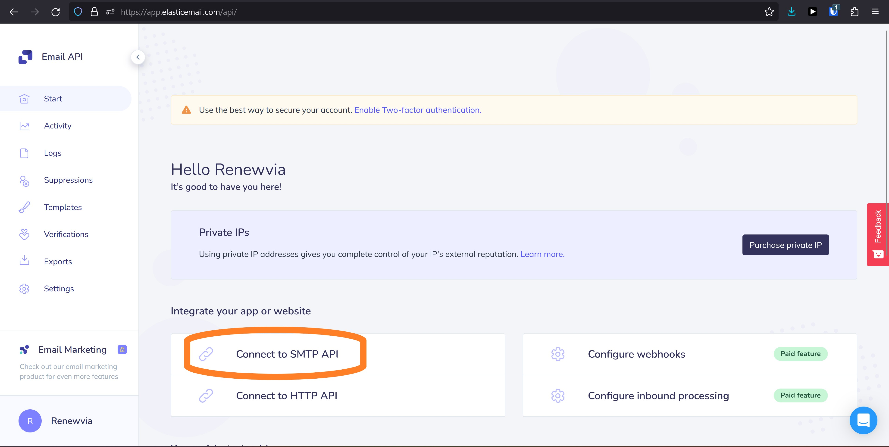
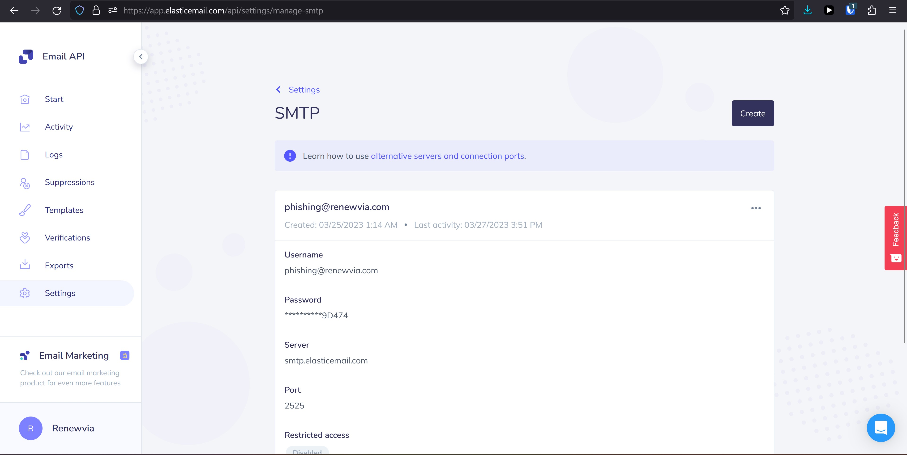
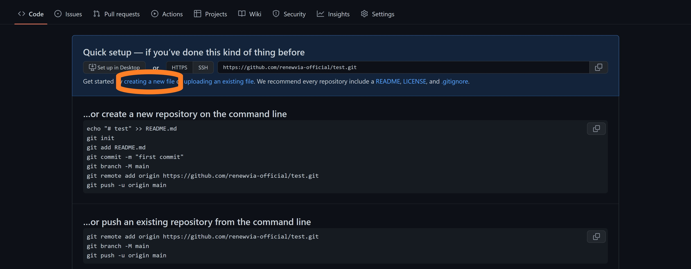
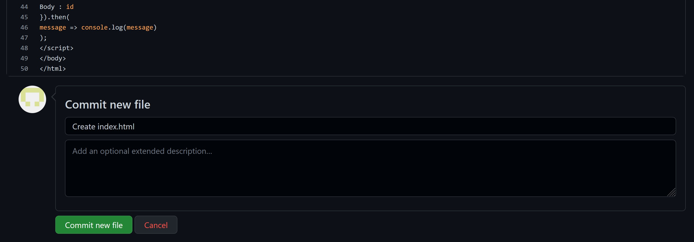

Phishing Prevention on a Budget: How to Test and Train Your Employees for Free
Posted on March 28, 2023
Contents
Introduction
Phishing attacks continue to be a significant threat to businesses of all sizes, and they are becoming increasingly sophisticated. Hackers use social engineering tactics to trick employees into divulging sensitive information, such as login credentials or financial data. This can result in data breaches, financial losses, and damage to a company's reputation.
To prevent these attacks, companies must take proactive steps to educate their employees and provide them with the necessary tools and training to recognize and avoid phishing attempts. One effective way to achieve this is by conducting phishing tests.
Phishing tests are simulated attacks that mimic real-life phishing attempts. They allow companies to assess their employees' susceptibility to phishing and identify areas where additional training is needed. While some organizations hire third-party providers to conduct these tests, it can be costly. In this article, I will show you how to run a phishing test on your employees for free, without the need for expensive third-party services, or even a dedicated internal server. I will provide you with step-by-step instructions and tips on how to make the most of this valuable tool for strengthening your company's cybersecurity defenses.
Prepare your Employees
Preparing your company's employees for a phishing test is essential to ensure that they understand the purpose of the test and are not caught off guard when they receive the simulated phishing email. Make sure that your company's employees know what actions they should take if they receive a suspected phishing email. This includes reporting it to the IT team, deleting the email, and avoiding clicking on any links or attachments. Create a mailbox for your company's employees to report suspicious emails. I created phishing@renewvia.com. Then, post a company-wide announcement, for example:
If you receive an email that looks suspicious, and you'd like help identifying if it's a phishing scam, please forward it to phishing@renewvia.com and send me a message. Sometimes, these scams are really convincing, and there's no harm in asking me to test it for you.
You may also choose to alert your company's employees that you will be performing a phishing test. When employees are aware that a phishing test is going to take place, they are more likely to take it seriously and make an effort to identify and report any suspicious emails they receive.
Wait long enough, perhaps a week, after sending the announcement to ensure everyone has had a chance to read and digest the request.
Set Up a Free SMTP Server
If you would like to be notified when an employee fails the phishing test, one option is to set up an SMTP server so your "malware" can send you an email when it is run on someone's computer. An SMTP (Simple Mail Transfer Protocol) server is a computer program or software that is responsible for sending and receiving emails. It is the standard protocol used for sending emails over the internet, and it is responsible for ensuring that the emails are delivered to the intended recipient's email server.
I recommend using Elastic Email's Email API, an email delivery engine with an SMTP relay you can call from JavaScript. As of this writing, a free Elastic Email account allows you up to 100 emails per day. To set up your SMTP server, create an account to use their Email API using a dummy email address specifically for this purpose. After creating an account, log in and click "Connect to SMTP API" from the Start menu on your account dashboard.
Then, create a user with the same email you used to create the Elastic Email account. Save the password generated by Elastic Email for later. When you are done, you should see a screen like this:
Create a "Malware" Website
The next step is to create the website to which your phishing email will link. In my opinion, the easiest way to do this is to use GitHub Pages. Navigate to GitHub, sign out of your account if you are already logged in, and click the "Sign Up" button in the top right corner of the page. Follow the instructions to create an account. Note that the username you pick will be included in the URL of the phishing link you send to your company's employees, so I recommend including your company name in the username (e.g., "renewvia-official").
Once you have created your new GitHub account, sign in and click "New" to create a new repository. Name your repository "[your username].github.io," where "[your username]" is your GitHub account username (e.g., "renewvia-official.github.io"). Ensure the repository is public and click the "Create repository" button. When GitHub navigates you to the new repository page, click "creating a new file."
Name your new file "index.html" to ensure it will be displayed by the browser when your "malware" site is live. Modify the following HTML script for your company, and copy-paste it into the "Edit new file" input box.
<!DOCTYPE html>
<html lang="en-US">
<head>
<title>You done messed up</title>
<meta charset="utf-8">
<meta name="viewport" content="width=device-width, initial-scale=1.0">
<script src="https://smtpjs.com/v3/smtp.js"></script>
</head>
<body>
<p>This was a simulated phishing exercise conducted by [your company's name] to raise awareness about the dangers of phishing. If it had been a real phishing attempt, you would have unknowingly given your personal information to a criminal. The information below can help you recognize phishing messages.</p>
<p>The email was sent from the address [your email address]. However, it is important to note that the sender's email address can easily be forged, and therefore should not be fully trusted.</p>
<p>If you hover your mouse over the link provided in the email, you will see that it would direct you to [your GitHub username].github.io, which is not a legitimate [your company's name] website. To identify the domain, look for the third forward slash (/) and read the words preceding it. In this case, the domain is github.io. It is also important to note that just because a link has an "https://" and a lock symbol in the browser does not necessarily mean that the website is safe to visit.</p>
<p>To protect yourself from phishing attacks, be cautious of emails and messages that exhibit any of the following six characteristics:</p>
<ul>
<li>A request to click on links</li>
<li>An unexpected attachment</li>
<li>A sense of urgency</li>
<li>An appeal to human greed and/or fear</li>
<li>A request for your sensitive data</li>
<li>Any non-Renewvia websites asking for your Renewvia account information</li>
</ul>
<p>Always verify the URL of the website before entering your login credentials. If it is not a [your company's name] website, do not provide your credentials. Phishers often direct users to imitation websites that appear legitimate to steal their sensitive information.</p>
<p>If you have any doubts or concerns about an email, forward it to [the mailbox you set up for reporting phishing].</p>
<p>As a result of clicking on the link, you are required to complete a cybersecurity awareness training. Please complete the training at <a rel="external" target="_blank" href="https://learnsecurity.amazon.com/en/index.html">https://learnsecurity.amazon.com/en/index.html</a> and send [your name] your certificate of completion.</p>
<script>
var url = window.location.href.split('?');
var id = url[url.length-1];
Email.send({
Host : "smtp.elasticemail.com",
Username : "[your Elastic Email SMTP username]",
Password : "[your Elastic Email SMTP password]",
To : '[your email address]',
From : "[your Elastic Email SMTP username]",
Subject : "Someone clicked the link",
Body : id
}).then(
message => console.log(message)
);
</script>
</body>
</html>
After pasting the above code into the input box, you will need to replace all of the bracketed purple text:
[your company's name], e.g., Renewvia.[your email address]should be the email address from which you will send the phishing scam and to which you want your company's employees to submit their training certificates of completion.[your GitHub username]should be the username you created for your GitHub account, e.g., renewvia-official.[the mailbox you set up for reporting phishing], e.g., phishing@renewvia.com.[your name][your Elastic Email SMTP username], e.g., phishing@renewvia.com.[your Elastic Email SMTP password]should be the alphanumeric password you recorded when you created the Elastic Email SMTP user.
My recommended website includes an assignment for those that click the link: complete a Cybersecurity Awareness Training provided by Amazon and submit their certificates of completion. NIST maintains a list of free and low-cost online cybersecurity learning content that is worth reading.
Note that this method involves keeping your Elastic Email SMTP user credentials visible in the HTML of a public webpage. GitHub will likely send you an email warning you of the risks associated with not encrypting login credentials. Because you have created the account specifically for the purpose of conducting a phishing test, the security risk here is negligible. Nonetheless, SmtpJS.com provides an explainer for how to encrypt your SMTP credentials in the "Security" section of their homepage.
When you finish editing the HTML file, scroll to the bottom of the page, name the commit whatever you want (e.g., "Create index.html"), and click "Commit new file." Automatically, GitHub will create a public website from the HTML you just committed. You can visit that website at https://[your GitHub username].github.io where "[your GitHub username]" is replaced with your GitHub username (e.g., https://renewvia-official.github.io/).
A crucial component of the above HTML page is the script element, which contains the JavaScript necessary to identify the individual who clicked the link and send you a notification email when they do. It works by reading the URL and looking for a question mark, "?", after which it expects the name of the person who clicked the link. So, using renewvia-official.github.io as an example subdomain, if someone visits https://renewvia-official.github.io/?nick, then their browser will automatically send an email containing the name "nick" to whichever email address was entered in the "To:" field of the above HTML page's script element.
Execute the Phishing Test
You are ready to begin sending phishing emails to your company's employees. Draft a phishing email or use mine:
Subject: URGENT Review Analysis
Body: Per our discussion, please review this analysis and send me your thoughts by EOD.
In the composition window of your email manager, highlight "this analysis" and create a hyperlink to the GitHub page you just created, being sure to include the question mark, "?", followed by some identifier for the recipient of the email. Extending the above example, you would send the email to me, and "this analysis" would link to https://renewvia-official.github.io/?nick. Repeat the process for each employee, adjusting the hyperlink URL each time so that you can identify which employees fail the test by clicking the link. Note that, as you test your phishing scam, you can use the browser's console to examine the status of the request sent to the SMTP server. The notification emails may wind up in your Spam/Junk folder.
Aftermath
Even if you prepared them well, your company's employees may have mixed responses to the phishing test. Heartily congratulate those who forward the email to the phishing report mailbox you set up, publicly rewarding them for their diligence. Gently encourage those who fail and click the link: "It's okay. That's why we do tests. After the training, you will understand better how to keep yourself and the company safe."
You may also want to create an internal report about how your company performed as a whole, including a plan to improve awareness and perform periodic testing.
Conducting phishing tests on your company's employees is a critical step in protecting your company's sensitive information and maintaining its cybersecurity defenses. While hiring third-party providers to conduct these tests can be expensive, you can run them for free using these steps. By preparing your company's employees, you can help to create a culture of awareness and vigilance around cybersecurity within your organization. By taking these proactive steps, you can minimize the risk of successful phishing attacks and ensure that your company's sensitive information remains secure. Remember, prevention is always better than cure, and the best defense against phishing attacks is an informed and alert workforce.
UPDATE: When I ran this test the first time at my company, a majority of my colleagues failed the test. After making them all take the training module, I tested them again one year later, this time by replacing the suspicious link with a file attachment that my email requested them open and inspect urgently. Not a single person opened the attachment. Instead, almost everyone emailed me to check the email's authenticity, and a few made comments like "I do remember my training 😄" and "You gotta up your game with me, I'm way harder to trick than that!"